Loading the changes. Each version appears here with its date and what it brought.
pokefirered · Windows and Android
FireRed Port Changelog
Pokémon FireRed running natively on Windows and Android, with a lot added to it. First, what the port brings compared to the original game; then every change, version by version.
Current version -
0 unreleased
0 changes in all
What's added to FireRed
Real-time battles Settings › Extras › Battle type
Wild Pokémon and trainers are fought right on the map: your Pokémon moves freely and A, B, L and R are its four moves.

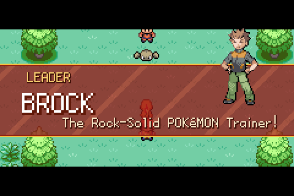
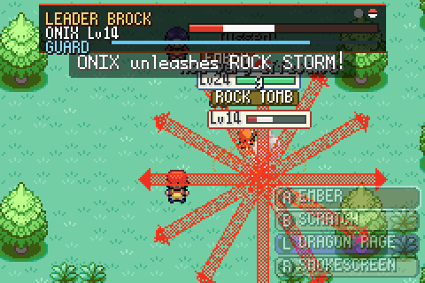
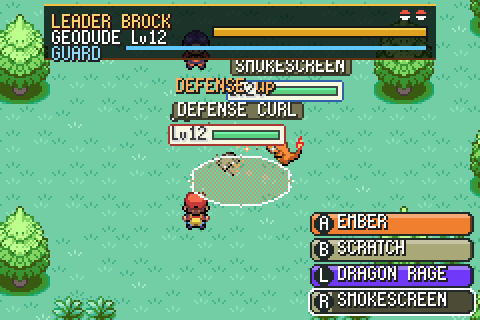
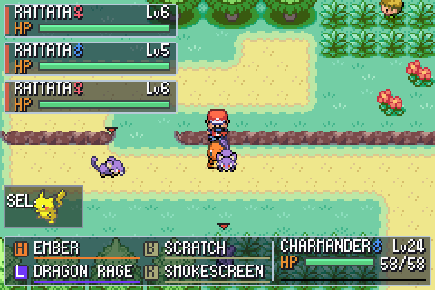
Also: trainers as hard as you choose (Easy to Very hard), double battles, wild Pokémon with their own ways of fighting, dazed foes that are easier to catch, combos and a rank after each win, aim help, cover behind trees, and SELECT to swap Pokémon at once.
Classic on map Settings › Extras › Battle type
FireRed's own battle, by turns as it always was, fought right on the map with the real-time battles' looks.
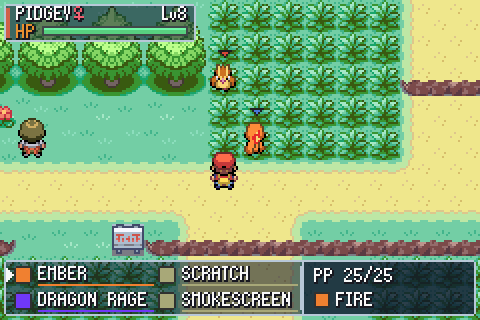
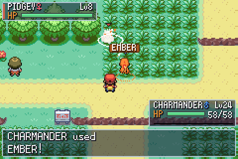
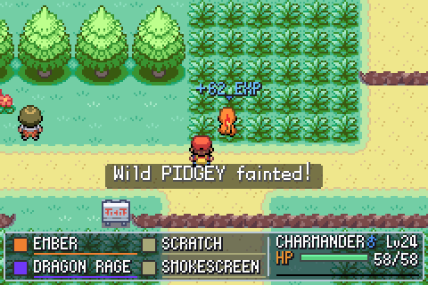
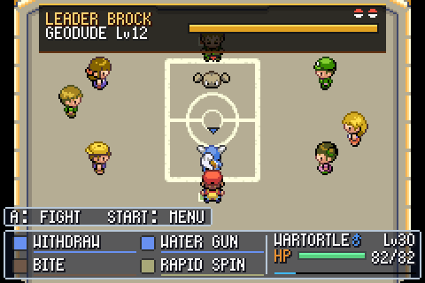
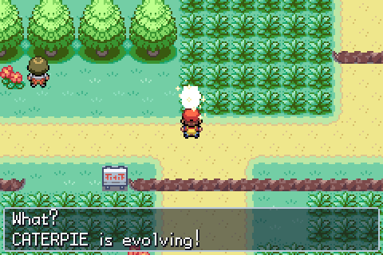
Also: everything works as in a battle, from the bag and the party to catching, nicknames and learning moves; double battles aimed at a foe; a badge's fanfare in the leader's words.
Game Corner+ Celadon City
Celadon's Game Corner full of new games, each named over its machines, a prize shop that changes every day and an egg machine.
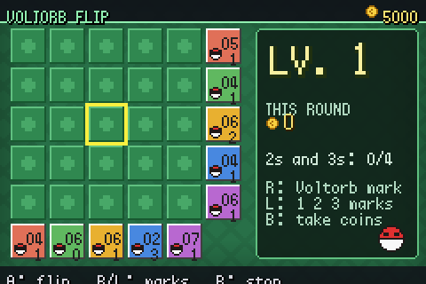
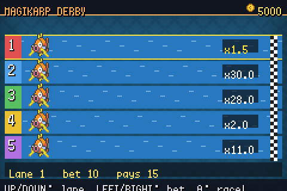
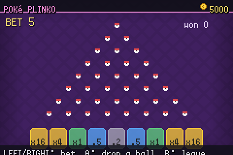
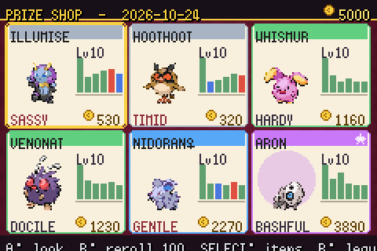
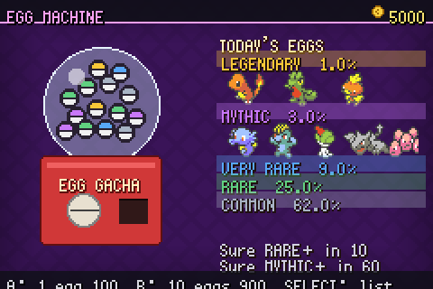
Also: Card Flip from Gold and Silver, Who's That Pokémon?, Stat Showdown and a Shell Game; TMs and held items in the shop, one of them a daily deal.
Play together Link window (F2)
A Wireless Adapter over the network: on the same Wi-Fi, or online with a code, without opening ports.
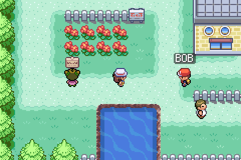
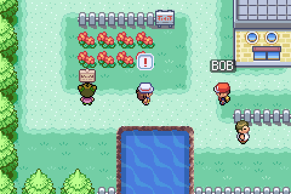
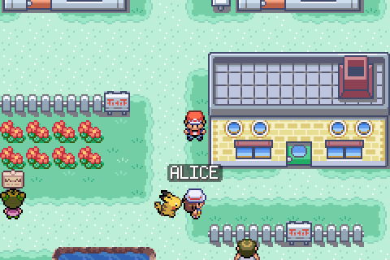
Also: the Union Room, trades and battles in the Direct Corner, Pokémon Jump, Dodrio Berry Picking, Berry Crush and Mystery Gift; trading and battling anywhere with the player in front of you; a friend list; how others see you (F6); the other players on the Town Map.
Pokémon and windows
More to see about your Pokémon, and windows the original never had.
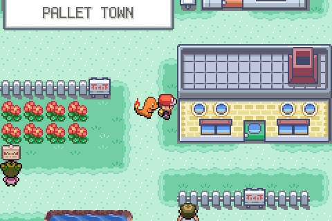
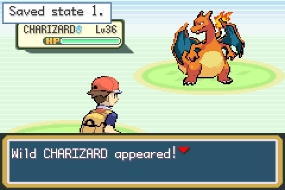
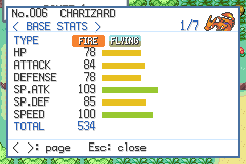
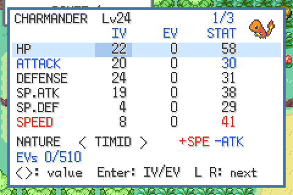
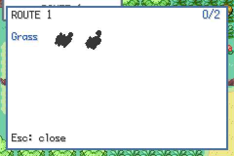
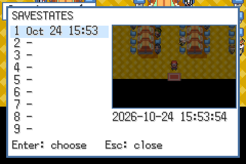
On the phone MENU › Touch buttons
Touch buttons beside the picture, made your own; a controller works too.
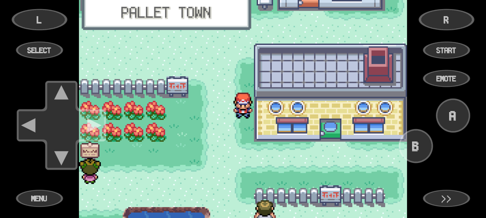
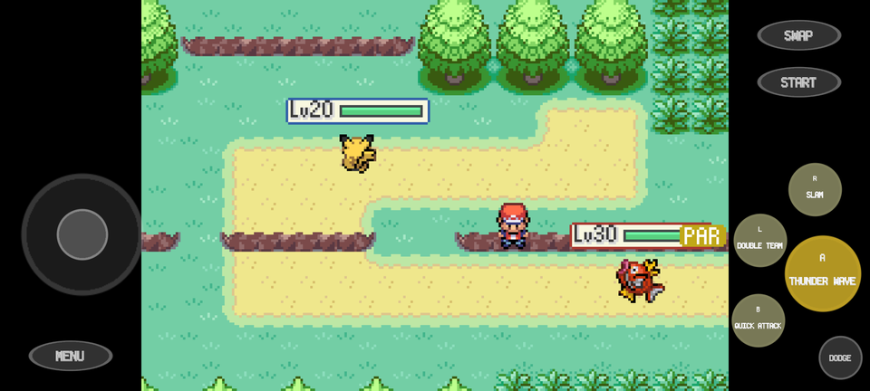
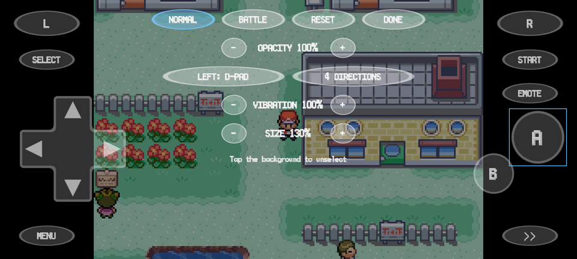
Game options
- Instant text
- Running indoors, and always running
- Skipping the quest log replay
- Trade evolutions by level or held item
- Reusable TMs and move tutors
- Physical or special by the move, as from Diamond and Pearl
- The Fairy type
- Renaming Pokémon and remembering moves from the party menu
- The party menu's FIELD (the field moves together) and POKéDEX
- Mints, bottle caps and EV-lowering berries (Celadon 5F)
- IVs, EVs and nature arrows in the summary
The program
- Windows (32 and 64-bit) and Android
- Resuming where you left off
- Fast-forward (in battles too, or not: your choice) and fullscreen
- Settings, keys and controller buttons (F4)
- The debug menu (F3)
- Exporting and importing the save
- The Mystery Gift events: the Aurora and Mystic Tickets
- This changelog in the game (MENU)